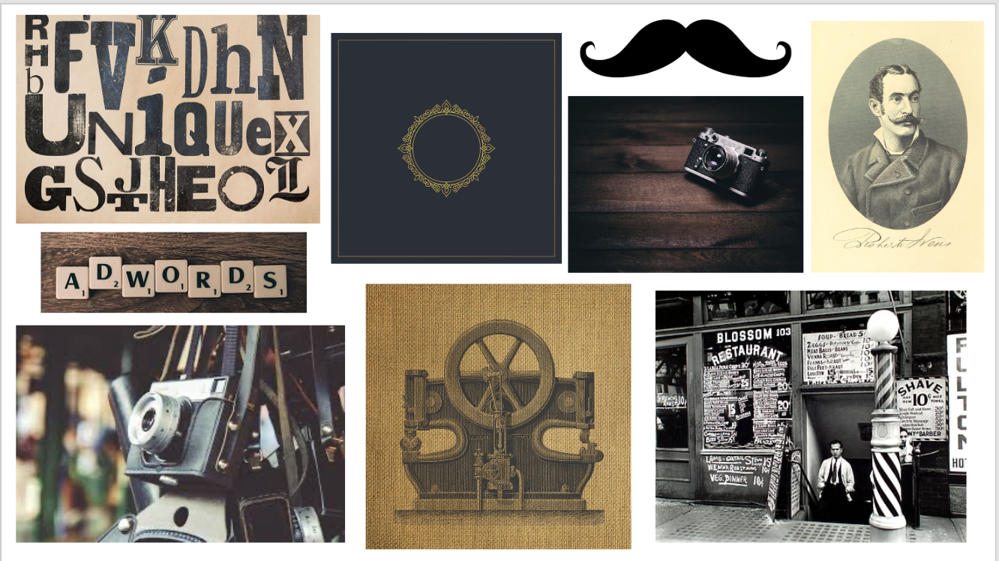
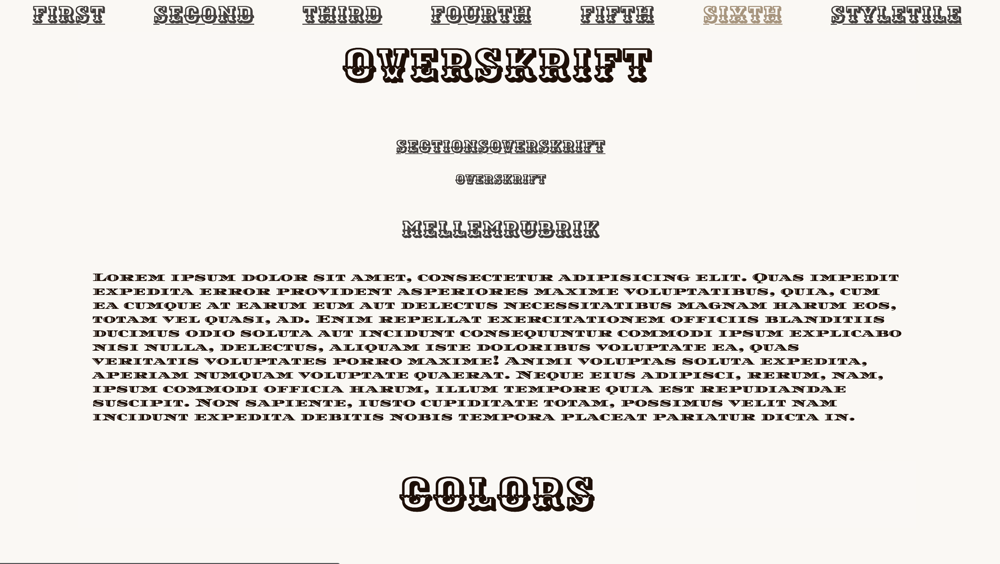
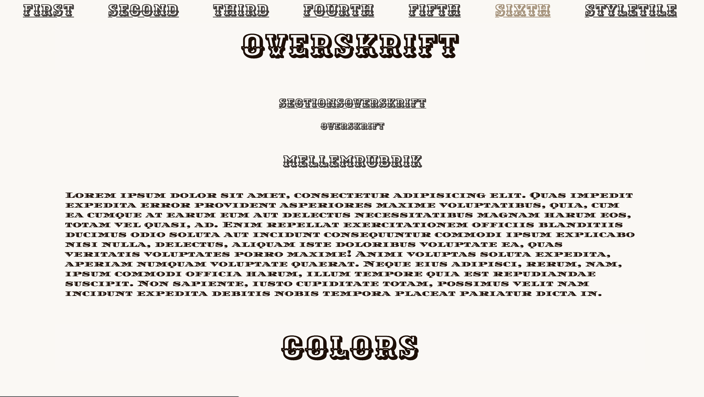
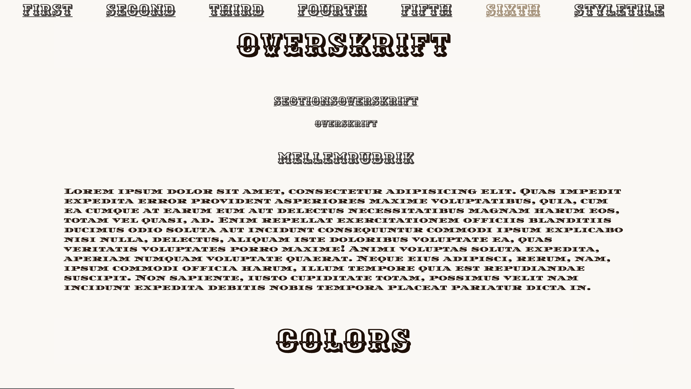
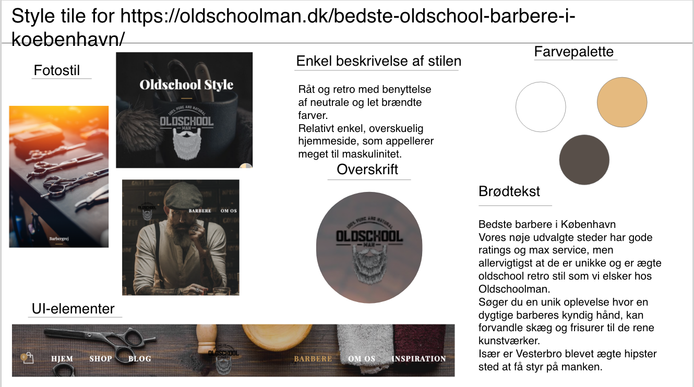
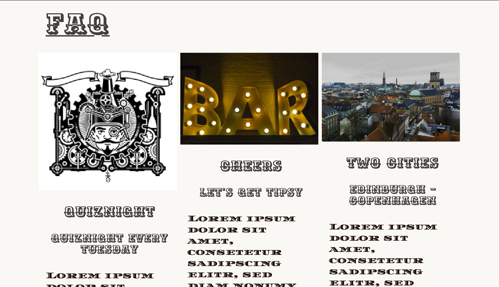
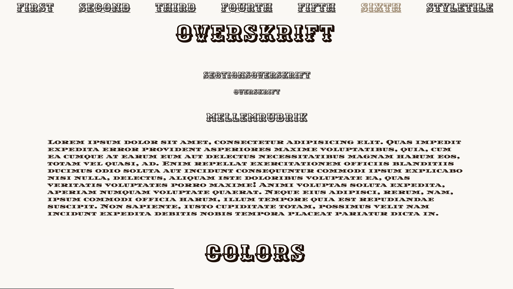

 




På dette forløb blev vi introduceret for programmeringssprogene HTML og CSS. Vi fik også kendskab til Adobe Creative Cloud, specifikt Adobe XD, da vi lavede moodboard og Photoshop, da vi lavede splashbillede til vores website.
Jeg fik tilegnet stilarten Hipster style/Modern retro og valgte at lave et website for en whiskey-bar. Ud fra
